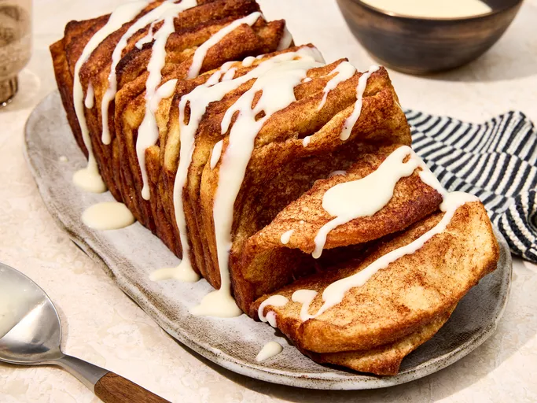

Homepage
Cinnamon Roll Pull-Apart Toast

Description
Picture layers of fluffy French bread coated in a decadent cinnamon-sugar blend and topped with a luscious cream cheese glaze. It’s part cinnamon roll, part French toast, and 100% delicious. Whether you make it for breakfast, brunch, or an afternoon snack, this is the easiest baked masterpiece to ever come out of your oven.
“It’s SO fun-looking,” said recipe taster Elizabeth Mervosh. “And I could honestly eat the whole thing.”
Ingredients
Bread
- cooking spray
- 1/2 cup packed dark brown sugar
- 2 tablespoons ground cinnamon
- 1/4 teaspoon kosher salt
- 2 (11 ounce) cans original French bread dough (such as Pillsbury)
- 1/4 cup unsalted butter, melted and cooled slightly
Glaze
- 3 ounce cream cheese, softened
- 3/4 cup sifted powdered sugar
- 3 to 4 tablespoons whole milk or half-and-half
- 3/4 teaspoon vanilla extract
- 1/4 teaspoon kosher salt